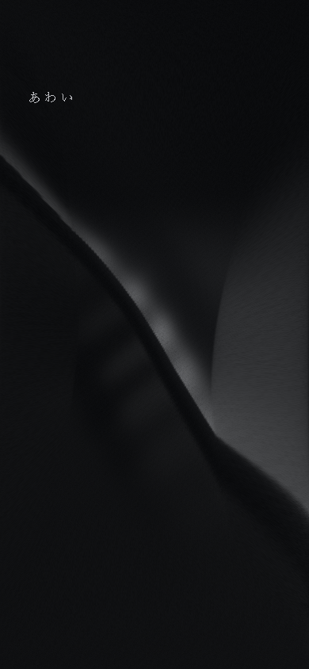
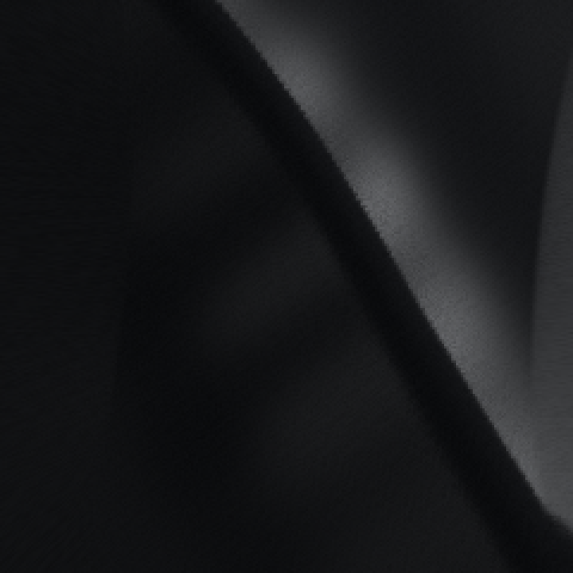
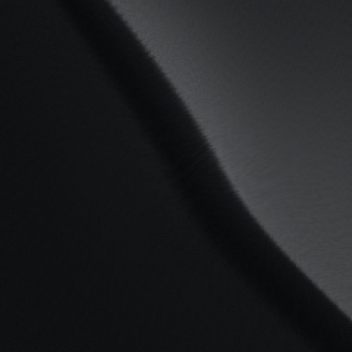

AWAI / G2-A / 2026.10.09
Clearから、Smoothへ。
Clearの見える変形を保ち、接触点の鋭い谷と、面の集中を軽減した試作です。静止形状・照明・黒の階調は共通。G2-Aだけを対象としています。
中央の谷は広い面に変わりました。ただし、稜線全体の最大曲率とスマホの一部の線方向圧縮は改善していません。造形上の問題がすべて解消したとは判断していません。
同じ荷重で比べる
面UV (0.42, 0.55)、荷重1、B、Full、DPR1。位置と荷重は同一です。画像は静止した荷重1を収録。光オフは追加の琥珀光・透過光を無効にし、共通の照明は残しています。



画像をタップすると原寸で開きます。接触前と復元後は両案で画素差0。保存版Clearは旧版と形状サンプル一致、画素差は最大1/255です。
接触と復元の時間
同じ位置へ0.6秒後に接触し、2.4秒保持して離します。追加光はオフ。動画はスマホ寸法／PC寸法のブラウザに同じ荷重を入力した収録で、スマホ実機の撮影ではありません。
各動画の再生ボタンでも確認できます。
機種によっては動画を開いて共有メニューから保存します。2本同時再生の可否は端末に依存します。スマホ用の保存ページ →
移動量・曲率・圧縮
稜線上の同じ501点を追跡します。横・縦の最大移動は別々の点で生じる場合があります。合成移動の最大値も併記します。
計測値を読み込み中。
数値の意味と比較範囲
全稜線曲率は画面外も含む501点の中央差分で、投影座標の横を画面比率で補正。単位は画面高さの逆数です。元の静止稜線の曲率も含むため、接触が追加した変位の2階差分を別に示しています。
追加沈みHessianは接触近傍の「荷重時の高さ − 静止高さ」の2階微分のFrobeniusノルム。谷の急な高さ変化を測る指標で、稜線全体の曲率と同じ量ではありません。
面積比は81 × 81点の投影変形Jacobianの行列式。1が無変形、0に近いほど局所面積が圧縮。最小線方向比は同Jacobianの小さい特異値で、ある方向への圧縮を表します。面積が改善しても、この値まで必ず改善するとは限りません。
中央の比較座標で面の反転は0。追加座標 (0.20, 0.30)、(0.75, 0.65)、(0.55, 0.50) は画像確認を行いました。全座標・全パラメータでの折り返しを保証する検査ではありません。
計測定義・生の結果 JSON表面と造形の変更
Clearの稜線移動を滑らかな17点の曲線へ分配し、横断方向にも連続して伝えています。最大移動を保ちつつ、接触点だけへ集める変形を置き換えました。沈み量、伝播範囲、曲率、局所圧縮は独立した開発用調整項目です。
表面の細かな高さのむらを接触の沈みから外し、繊維は画素より細かくなる領域で周波数を抑えています。中央の谷付近の強い縞・段差は軽減しました。別の接触位置や高い圧縮設定では、細部の縞が残る可能性があります。




別の接触位置を確認
現在のモデルの限界
高さ場と指定した稜線変位を滑らかにつないだ演出モデルです。面内のひずみと曲げを力学的に釣り合わせていないため、スマホの縦長画面では端の固定条件と大きい横移動が競合し、一方向の圧縮が残ります。録画と別の接触位置では、右端付近の締まった谷の陰影も残っています。PCの全稜線最大曲率も増えています。
ここでパラメータ調整を繰り返す作業は止めました。残る折れ・圧縮が評価上問題になる場合の代替は、粗い膜格子で面内の伸縮制約と曲げ制約を解く方式です。静止時のG1形状と既存の描画・照明は維持し、変形の計算だけを置き換える方針になります。今回はその方式には着手していません。
テストと未検証事項
自動テスト結果を読み込み中。
旧検査は入力、スクロール、WebGL非対応時の静止表示、コンテキスト復旧、資源解放、品質切替などを維持。追加検査はClear保存、静止／復元一致、光オフA/B一致、調整項目の独立性と、Smoothの短いタップ・キャンセル・再接触です。これらの合格は、美術品質の承認を意味しません。
Full 49,601頂点／98,304三角形、Balanced 27,985頂点／55,296三角形。切替時の資源解放を確認。Smoothの追加計算のGPU実測時間、低性能端末でのFPS・発熱は未検証で、品質は自動で下げていません。
PC/SP寸法でEdge自動検証、WebKitは起動確認のみ。iPhone・Android実機の指操作、Safariのスクロール／ピンチ／バー伸縮、実画面の低輝度、屋外、長時間使用は未検証です。